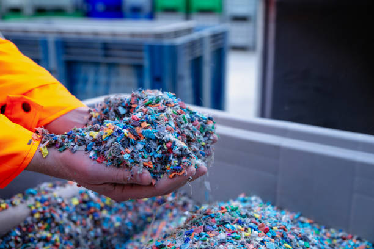

Product Details
Our recycled granules are made from post-consumer plastic waste, promoting sustainability. They maintain quality while reducing environmental impact, suitable for various applications like packaging and construction.
- Composition: Mixed recycled plastics (HDPE, PP, PET)
- Density: Varies by mix
- Applications: Eco-packaging, garden products, furniture
- Benefits: Cost-effective, reduces landfill waste, customizable grades
